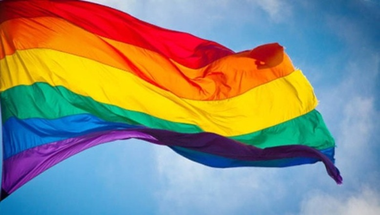

Si el príncipe dinamarqués Hamlet, creado por William Shakespeare se hiciese esa pregunta en la actualidad, seguramente estaría media obra tratando de contestarla. Vivimos en un mundo naturalmente diverso, tanto a nivel personal como social, las personas contamos hoy con una multiplicidad de opciones de vida que hacen la elección mucho más compleja, pero mucho más interesante.
Podemos seleccionar nuestra carrera, nuestro trabajo, nuestra religión, donde vivir y muchas otras cosas más, podemos seleccionar “casi todo pero ese “casi “limita muchas situaciones en las cuales la elección no depende de nosotros… Hay condicionantes físicas que ya no dependen de lo que a nosotros nos gustaría, simplemente son de esa forma y aunque tratemos de buscar una explicación, no siempre es posible obtenerla .Es imposible decidir sobre nuestro color de piel, sobre nuestro color de ojos, así como tampoco se puede elegir el sexo ni la orientación sexual …Estas cosas escapan inevitablemente a nuestra voluntad… Sin embargo, cada uno de estos factores, los que podemos elegir y los que no podemos, dan a nuestras sociedades una diversidad incomparable, única, que debería ser aprovechada en el bien común de todos.
Esta variedad que tiene nuestro mundo, basada en gran medida en las diferencias personales, es lo que ha permitido a la humanidad lograr el grado de desarrollo científico, cultural y tecnológico al que hemos llegado. Lamentablemente, pese a todo el tiempo que ha vivido la humanidad sobre el planeta tierra, no ha aprendido a vivir respetando esas diferencias que brillan por todas partes. Y más que motivo de conflicto, deberían ser motivo de unión , ya que cada una de las personas que está por aquí, seguramente tiene algo importante queaportar. Escucharlas es un derecho y deber que tenemos cada uno de nosotros y que nos permitirían mejorar nuestra convivencia, haciéndola más respetuosa y solidaria. ¿Quiénes ponen las reglas de convivencia? Partamos de la base de que las normas no funcionan por si solas, alguien debe ser el primero en llamar la atención pública sobre un problema percibido y hacer sentir a la gente que algo debe hacerse sobre e se problema. Esto significa que la creación de pautas de conducta requiere acción social, lo mismo que para su entrada en vigor, y difícilmente estas entren en vigor si no hay un mínimo consenso en ello.
Howard Becker, en su libro “Outsiders” define como “Empresarios Morales “a aquellas persona s o grupos que tiene como finalidad trabajar en campañas sociales para producir cambios en algunos aspectos de la sociedad que consideran necesarias para estas. Frecuentemente actúan presionando para que se publiquen nuevas leyes. Y el mismo autor habla de “Impositores de las Reglas “para referirse a aquellas organizaciones encargadas de aplicar la ley respecto hacia los individuos que violen las normas establecidas. Y si bien sabemos la necesidad que hay en un mundo tan complejo y diverso de establecer consensos y criterios normativos para funcionar ordenadamente, tampoco no es ajeno que este consenso muchas veces nos es impuesto delo que llamamos mayorías sociales , entendiendo como tales aquellas personas que ocupan posiciones privilegiadas dentro del sistema de estratificación social. Trataremos ahora uno de los aspectos más controvertidos en la actualidad en lo que tiene que ver con la Diversidad: La Diversidad Sexual Parecen lo mismo, pero no lo son : Sexo, Género, Identidad sexual... Las interpretaciones culturales sobre lo que es femenino o masculino varían tanto de una sociedad, como a lo largo de la historia. Y no solo cambian los significados culturales, sino también las actividades sexuales de la gente.
Como ya sabemos, en la Grecia clásica la masculinidad no estaba a reñida con la homosexualidad, por el contrario era natural el homosexualismo en determinadas relaciones sociales, por ejemplo un joven y un maduro aristócrata. Pero hoy estamos en el siglo XXI, la interacción social tiene otros códigos, que sean o no de nuestro agrado debemos conocer; porque somos seres sociales y necesitamos de los demás para poder crecer en forma personal y social. Veamos algunas delimitaciones que establecen los diferentes especialistas relacionadas con la sexualidad y los vínculos sociales. Sexo y Género. Mientras que el sexo se refiere a la diferenciación biológica entre mujer y hombre (macho y hembra) el género se refiere a los aspectos sociales que tiene que ver con las diferencias sociales. El género está presente en toda nuestra vida social y es fundamental en la visión que tenemos de nosotros mismos, en nuestras relaciones sociales personales, sociales y laborales. El sexo se refiere especialmente a un conjunto de características biológicas, el género se refiere a los contenidos sociales que tiene que ver con la masculinidad y feminidad y que están determinados mayormente, por la cultura. En nuestro desarrollo personal y social, las personas adquirimos lo que se da en llamar identidad de género, que es el estado psicológico que cada persona siente con respecto al género y que puede corresponder o no con el sexo biológico de nacimiento De acuerdo a esa identidad que los individuos reconocen en su persona se desarrolla el rol de género, es decir el papel que se tiende a desempeñar sociedad en elación con el género.
En el texto “Cuerpos equivocados(Helien-Piotto)se define rol de género a todo aquello que una persona hace y dice para indicar a otros, o indicarse a sí misma , el grado en que es mujer , varón o ambivalente. Es la expresión pública de la identidad de género. ¿Cómo llega una persona a adquirir una noción de género? Pues la sociedad se encarga de enseñar a las nuevas generaciones desde el momento que nacen las expectativas que tienen respecto a su conducta mediante dos mecanismos básicos:
1- Tratamiento diferencial-El tratamiento diferencial no se limita al ámbito del hogar, toda la sociedad fomenta esta diferenciación que s e manifiesta en muchos momentos de nuestra interacción diaria.
2- Identificación con modelos sexuales. Las personas tendemos a imitar conductas, varios autores sociológicos han establecido este proceso como una forma importante de adquisición de pautas de conducta.
Imitamos el comportamiento de nuestros padres, pero también los medios masivos de comunicación de masas proveen modelos con los cuales los niños pueden identificarse. Otro de los conceptos que debemos tener claro es el de la orientación sexual, si mucha personas lo entendiesen tal como es su real significado , seguramente muchos de los prejuicios y las actitudes discriminatorias que existe en las sociedades actuales habrían terminado, o por lo menos no serían tan consecuentes. La orientación sexual se refiere a la atracción emocional, afectiva y sexual que hace que cada persona tenga el deseo de intimar y tener relaciones sexuales con personas del mismo sexo, del sexo contrario o ambos. La orientación sexual no es una opción, y por lo tanto, como ya mencionamos, no puede ser cambiada ni escogida a voluntad. (Glosario de términos-MYSU) En el texto ya citado, Cuerpos Equivocados ,se define a dicha orientación como al objeto de los deseos eróticos y/amorosos de un sujeto, y la remite a un aspecto vincular de las personas en relación con otro ser humano. Pero jamás debemos dejar de destacar que la orientación sexual no se elige, quienes tiene una orientación sexual diferente a la mayoría no es porque lo hayan escogido en forma voluntaria, ni tampoco debe considerarse una enfermedad, es simplemente un camino diferente para expresar el amor, o la sexualidad, y que no da lugar a individuos mejores o peores que los demás. Conclusión. La salud es uno de los derechos fundamentales que tenemos los seres humanos, y la salud sexual está incluida dentro de ésta. La Organización Mundial de la Salud (OMS) (de la cual forma parte Uruguay) define a la salud sexual como un estado de bienestar físico emocional, mental y social relacionado con la sexualidad; no es solamente la ausencia d enfermedad, disfunción o incapacidad. Para que la salud sexual s e logre y se mantenga, los derechos sexuales de todas las personas deben ser respetados, protegidos y ejercidos a plenitud” De acuerdo con la misma organización (OMS) "La sexualidad es un aspecto central del ser humano, presente a lo largo de su vida. Abarca al sexo, las identidades y los papeles de género, el erotismo, el placer, la intimidad, la reproducción y la orientación sexual.
Se vivencia y se expresa a través de pensamientos, fantasías, deseos, creencias, actitudes, valores, conductas, prácticas, papeles y relaciones interpersonales. La sexualidad puede incluir todas estas dimensiones, no obstante, no todas ellas se vivencian o se expresan siempre. La sexualidad está influida por la interacción de factores biológicos, psicológicos, sociales, económicos, políticos, culturales, éticos, legales, históricos, religiosos y espirituales" (OMS, 2006) Por lo tanto y para finalizar, debemos tener en cuenta que la salud sexual (que involucra aspectos de carácter biológico, psicológico, sociológico y cultural) debe basarse en tres principios imprescindibles, que de respetarse, permitirían lograr una convivencia más armoniosa y amigable que la que caracteriza a las sociedades en la a actualidad. Diferenciamos entonces:
A- Individualización(tomar en consideración las diferencias individuales)
B- Respeto a la dignidad humana(valores personales y de grupo)
C-Libre determinación (frente a las alternativas la persona es quien debe e decidir siempre en última instancia y ser respetado por su decisión)
Vivir en un mundo diverso no significa que debamos tratar de igualarnos unos con nosotros. Por el contrario, debemos aprovechar esas diferencias, enriquecedoras, en el bien común de la humanidad. Y la única semejanza que deberíamos buscar está en los derechos y deberes que cada uno tenemos; en la manifestación de un comportamiento honorable y solidario como seres racionales y responsables que debemos ser. El desafío queda planteado, la respuesta depende de nosotros...